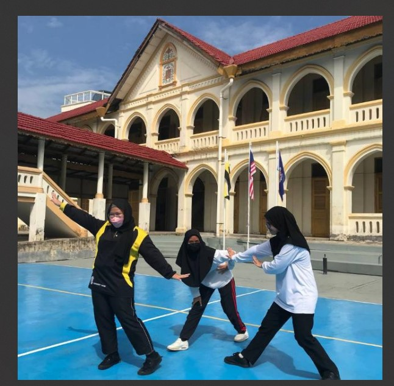
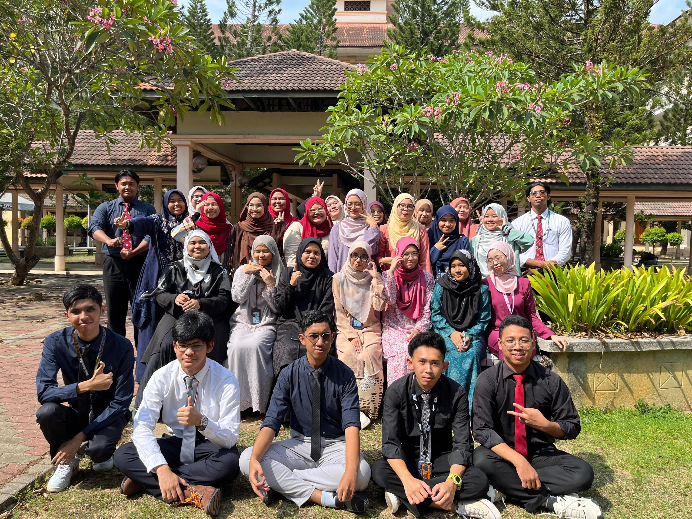

HIGHSCHOOL!

I went to SMK Convent, Ipoh when I was 14, having spent a year in one of the religious schools at my hometown. Fed up and wanting all of her children to be integrated in their English education as they were when they were preschoolers, I entered this school and made new memories, bad and good.
I was a student of arts, business and my favorite subject amongst these three, English Literature. I wasn't brilliant per se, (failed my Maths paper twice!) but, I had fun as a teenager and a growing youth. Studying in a school of different religion taught me to empathize as well as to understand; it is crucial to throw away the mindset of 'who's better?' and focuses on 'how we can be better, as one?.'
Studying in all girls school only taught me two thing; girls can be vicious creatures yet they can be the one thing that gives you hope to go through the day, too.
UNIVERSITY!
The players gonna play, the haters gonna hate.

Entering UiTM Merbok, it was an eye-opener, for sure. I wasn't expecting to be hated so prominently for lousy reasons yet, I stay persevere. Every semester that passes, I grow to become a new me, adapting to changes as well as maintaining boundaries with certain people as well as be more stern. I'm no crybaby, anymore.
My course code is CDIM144, a study of library with a mix of computer coding as well as business since we are the 'new scheme.' Over all, it can be exhausting for we are learning new things that we don't expect at all every single day yet, I don't want to change this course and class since I found my strength with some of them, my will to survive constantly.